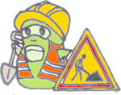

<!DOCTYPE HTML>
<html manifest="" lang="fr-FR">
<head>
    <meta charset="UTF-8">
    <title>Mieux trier à Nantes</title>
    <script src="resources/datas/GarbagesDatas.js"></script>
	<script src="resources/datas/UsualCategoriesDatas.js"></script>
	<script src="resources/datas/HashGarbagesDatas.js"></script>
	<script src="resources/datas/HashFichesDatas.js"></script>
	<script src="resources/datas/HashDocsDatas.js"></script>
	<script src="resources/datas/HashStructuresDatas.js"></script>
	<script src="resources/datas/HashTrisacsDatas.js"></script>
	<script src="resources/datas/HashHomeCollectModsDatas.js"></script>
	<script src="resources/datas/HomeCollectModsDatas.js"></script>
	<script src="resources/datas/HashADomicileDatas.js"></script>
	<script src="resources/datas/HashQuizDatas.js"></script>
	<script src="resources/datas/CollectModsDatas.js"></script>
	<script src="resources/datas/CommentsDatas.js"></script>
	<script src="resources/datas/AdvicesDatas.js"></script>
	<script src="resources/datas/DocsDatas.js"></script>
	<script src="resources/datas/InfosDatas.js"></script>
	<script src="resources/datas/LabelsDatas.js"></script>
	<script src="resources/datas/QuizsDatas.js"></script>
	<script src="resources/datas/Structures1Datas.js"></script>
	<script src="resources/datas/Structures2Datas.js"></script>
     <style type="text/css">
        /**
         * Example of an initial loading indicator.
         * It is recommended to keep this as minimal as possible to provide instant feedback
         * while other resources are still being loaded for the first time
         */
        html, body {
            height: 100%;
        }
        
        #appLoadingIndicator {
            
            margin-top:8em;
            
        }

	#appLoadingIndicator > * {
            background-color: #FFFFFF;
            -webkit-animation-name: appLoadingIndicator;
            -webkit-animation-duration: 2s;
            -webkit-animation-iteration-count: infinite;
            -webkit-animation-direction: linear;
        }
        
        /**
        #appLoadingIndicator > * {
            background-color: #FFFFFF;
            float: left;
            height: 20px;
            margin-left: 11px;
            width: 20px;
            -webkit-animation-name: appLoadingIndicator;
            -webkit-border-radius: 13px;
            -webkit-animation-duration: 0.8s;
            -webkit-animation-iteration-count: infinite;
            -webkit-animation-direction: linear;
            opacity: 0.3
        }
		*/
        
        .btnAction2 {
        	background-image: url('resources/images/bouton_ecotox_petit.png');
        }
        .btnAction {
			width: 100px;
			height: 100px;
		}
    </style>
 
    <!-- The line below must be kept intact for Sencha Command to build your application -->
    <script id="microloader" type="text/javascript" src="touch/microloader/development.js"></script>
    
	<script src="resources/lib/leaflet-0.7.3/leaflet-src.js"></script>
	<!--[if lte IE 8]>
	    <link rel="stylesheet" href="resources/css/leaflet.ie.css" />
	<![endif]-->
    <script src="resources/lib/mieuxtrieranantes/common.js"></script>
	<script src="resources/lib/mieuxtrieranantes/comments.js"></script>
	<script src="resources/lib/mieuxtrieranantes/translation.js"></script>
	<script src="resources/lib/mieuxtrieranantes/date.js"></script>
	<script src="resources/lib/mieuxtrieranantes/plageshoraires.js"></script>
    <script type="text/javascript" >
    	function load() {
    	}
    </script>
    
</head>
<body onLoad='Javascript:load()'>
	<script type="text/javascript">
  			/*if (_isIE()) {
	  			// <br/><center><div style='color:red'>Le site ne fonctionne plus avec le navigateur Internet Explorer.</div><div>Nous ne sommes pas en mesure de corriger ceci rapidement.</div><br/><div style='color:red'>Veuillez utiliser un autre navigateur (Firefox, Chrome, Safari, Chromium, Edge...)</div></center>
  				var texte = "Le site fonctionne mal avec le navigateur Internet Explorer (boutons page d'accueil...). Veuillez utiliser un autre navigateur (Firefox, Chrome, Safari, Opera, Chromium, Edge...)";
  				alert(texte);
  			}*/
			var texte = "<div id='appLoadingIndicator'><center><br/>Par des b&eacute;n&eacute;voles<br/>www.mieuxtrieranantes.fr<br/>Version 1.16 (association)<br/><i>Nouveaut&eacute;s : fin bascule en anglais sur clic sur drapeau, ajout 150 composteurs collectifs Compostri sur la carte</i></center></div>";
			document.write(texte);
	</script>
</body>
</html>
